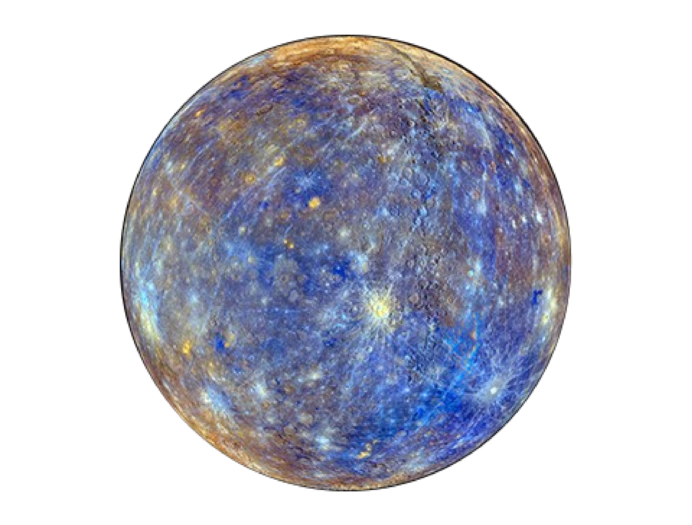
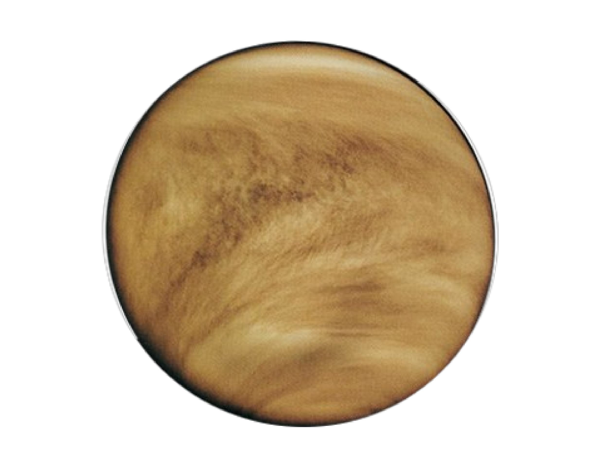

Section 12.1 The Planets

|

|
||
Mercury [Figure 12.1.2] is the closest planet to the sun in our solar system. It is named after the Roman messenger god Mercury, who was known for his speed. Mercury is the smallest planet in our solar system and has a diameter of only 4,880 kilometers (3,032 miles). Mercury's surface is heavily cratered and has a rocky, barren landscape. It has no atmosphere to speak of and experiences extreme temperature fluctuations between its day and night sides due to its proximity to the sun. During the day, temperatures can reach up to 430 degrees Celsius (800 degrees Fahrenheit), while at night, they can drop to as low as -180 degrees Celsius (-290 degrees Fahrenheit). Mercury was visited by the Mariner 10 spacecraft in the 1970s, and more recently by the Messenger spacecraft from 2011 to 2015.
Mercury is tidally locked to the Sun, which means that the same side of Mercury always faces the Sun. This is because of its day and year period. Mercury takes about 59 earth days to complete one rotation on its axis. That is Mercury's rotational period (day) is approximately 176 Earth days, which is about 2/3 of its year (orbital period around the Sun). This means that one day on Mercury (one complete rotation on its axis) takes about 176 Earth days, while one year on Mercury (one complete orbit around the Sun) takes about 88 Earth days.
\begin{equation*}
88\times 2/3 = 58.67 \approx 59 days
\end{equation*}
Mercury's surface is rocky and heavily cratered, with vast plains, mountains, and cliffs. Its surface features are similar to those of our Moon, with large impact craters, smooth plains, and steep cliffs. However, Mercury's surface is more diverse and complex than the Moon's surface. One of the most prominent features on Mercury is the Caloris Basin, a large impact crater that measures about 1,550 kilometers in diameter. The basin is surrounded by a ring of mountains and contains a variety of geological features, such as smooth plains, chaotic terrain, and scarps. Mercury also has many other large impact craters, such as the Rembrandt Basin and the Beethoven Basin, which are some of the largest impact basins in the solar system.
Subsection 12.1.1 Venus
Venus [Figure 12.1.3] is the second planet from the Sun and is sometimes called Earth's sister planet due to its similar size and composition. However, Venus has a very different climate and geology than Earth. Venus has a thick atmosphere primarily composed of carbon dioxide, with clouds of sulfuric acid that completely obscure its surface. The atmospheric pressure on the surface of Venus is about 90 times greater than Earth's, making it a very hostile environment for exploration. Despite the challenges of studying its surface, scientists have been able to use radar and other methods to create maps and images of Venus. These have revealed that Venus has a diverse landscape, with highland regions, flat plains, and thousands of volcanic structures. One of the most striking features on Venus is the massive shield volcano known as Maat Mons, which is one of the highest mountains in the solar system. Venus also has a number of other large volcanic structures, including the volcano Ozza Mons and the pancake-shaped volcano Theia Mons. Another notable feature on Venus is its extensive system of canyons and valleys, which are similar in appearance to those found on Mars. These features provide evidence of past tectonic activity and suggest that Venus may have experienced significant geological changes over time.
Venus rotates very slowly, taking about 243 Earth days to complete one rotation, which is longer than it takes for Venus to complete one orbit around the Sun (which takes about 225 Earth days). As a result, Venus has a very unusual day and night cycle. On Venus, a single day (one complete rotation) lasts longer than a year (one orbit around the Sun). This means that a day on Venus lasts about 117 Earth days, while a night on Venus also lasts about 117 Earth days. However, it's important to note that the atmosphere of Venus is very thick and opaque, which makes it difficult to define day and night in the same way we do on Earth. Instead, Venus experiences a kind of "twilight" all the time, with the level of light varying depending on the location and altitude in the atmosphere.
Like the Moon, Venus exhibits phases as seen from Earth. The phases of Venus occur because Venus orbits the Sun, and as it does so, its position relative to the Earth changes, causing us to see different amounts of its illuminated surface. When Venus is on the opposite side of the Sun from Earth, it is in its "full" phase, with its entire illuminated surface facing away from us. As Venus moves closer to Earth in its orbit, it begins to appear as a "waning gibbous" phase, where it is more than half illuminated but not yet fully illuminated. When Venus reaches its closest point to Earth in its orbit, it appears in its "half" or "first quarter" phase, with half of its illuminated surface facing us. As Venus moves further along in its orbit, it appears as a "waxing crescent" phase, with less than half of its illuminated surface visible. Finally, as Venus approaches its position on the opposite side of the Sun from Earth, it appears as a "new" phase, with its fully illuminated surface facing away from us. Venus then moves back around the other side of the Sun and begins the cycle of phases again. The phases of Venus are one of the key pieces of evidence that supported the heliocentric model of the solar system, where the planets orbit the Sun, rather than the geocentric model, where the Earth was thought to be the center of the universe. The phases of Venus were first observed by Galileo in 1610, and their regular pattern was later explained by the heliocentric model proposed by Copernicus.
Subsection 12.1.2 Mars
Mars [Figure 12.1.5] is the fourth planet from the Sun and the second-smallest planet in our solar system, after Mercury. It is often referred to as the Red Planet because of its reddish appearance, which is caused by iron oxide or rust on its surface. Mars has a diameter of approximately 6,779 kilometers, which is about half the size of Earth. It has a thin atmosphere composed mainly of carbon dioxide, with small amounts of nitrogen and argon. Mars also has the largest volcano and the deepest canyon in the solar system. There is evidence that liquid water once existed on Mars, and there are signs of dried-up riverbeds, lakes, and even an ancient ocean. The search for signs of life on Mars is a major focus of current and future missions. Several spacecraft, including rovers and orbiters, have been sent to Mars to study its surface, atmosphere, and geology. In 2020, NASA's Perseverance rover successfully landed on Mars and began exploring the Jezero Crater, which is believed to have once been a lakebed and could contain evidence of past microbial life. Mars is also a target for future human exploration, with plans for manned missions and even eventual colonization. However, the harsh conditions on Mars, including its thin atmosphere and extreme temperatures, make any such missions challenging and expensive.
The thin atmosphere of Mars does not provide significant protection from the sun's radiation and solar wind, which means that the planet's surface is bombarded by high-energy particles. However, the atmosphere does help to regulate the planet's temperature and weather patterns. The temperature on Mars can vary greatly, ranging from an average of about -63°C (-81°F) at the equator to as low as -143°C (-225°F) at the poles during the winter. During the summer, temperatures can reach a maximum of around 20°C (68°F) at the equator. The Martian atmosphere also contains clouds, dust storms, and seasonal weather patterns. Dust storms can sometimes cover the entire planet and can last for weeks or even months, affecting the solar-powered rovers and landers that are exploring the surface.
While the Mars missions have not yet found definitive evidence of life on Mars, they have provided valuable data and insights into the planet's geology, climate, and potential habitability. Future missions, including the joint NASA-ESA Mars Sample Return mission, are planned to bring back samples from Mars for further analysis, which may help answer the question of whether life exists or has ever existed on the planet.
Mars has two small moons, named Phobos and Deimos, which are thought to be captured asteroids. Phobos is the larger and closer of the two moons, and is heavily cratered with deep grooves and ridges on its surface. Its surface is thought to be composed of a mixture of rock and dust, and it orbits Mars at a distance of only 9,377 km (5,827 miles), which is closer than any other moon in the Solar System relative to its host planet. Deimos is smaller and more irregularly shaped than Phobos, and has a smoother surface with fewer craters. Its surface is also thought to be composed of a mixture of rock and dust, and it orbits Mars at a distance of about 23,460 km (14,577 miles). Both Phobos and Deimos are relatively small and irregularly shaped, and are thought to be composed of materials similar to those found in asteroids. They have been studied in detail by several spacecraft, including the Mars Reconnaissance Orbiter, which has provided us with high-resolution images and valuable scientific data about these small moons of Mars.
Subsection 12.1.3 Jupiter
Jupiter [Figure 12.1.6] is the largest planet in our solar system and the fifth planet from the Sun. It is located between the orbits of Mars and Saturn. It has a diameter of 86,881 miles (139,822 kilometers) and is a gas giant planet, meaning that it is primarily composed of hydrogen and helium gas, with no solid surface. Jupiter is known for its distinctive colorful bands of clouds, which are caused by strong winds in its atmosphere that blow in opposite directions at different latitudes. It also has a giant red spot, a massive storm that has been raging for over 300 years. Jupiter's strong gravitational pull has also led to the discovery of many small, rocky asteroids and comets that are captured in its orbit. Jupiter has been studied extensively by spacecraft, including NASA's Voyager 1 and 2 missions, as well as the Galileo spacecraft, which orbited the planet from 1995 to 2003. The Juno spacecraft, launched by NASA in 2011, is currently in orbit around Jupiter, studying its atmosphere, magnetic field, and interior structure.
Jupiter has more than 79 known moons, the largest of which is Ganymede, which is even larger than the planet Mercury. The most famous moon of Jupiter is probably Europa, which is known for its potential subsurface ocean and the possibility of harboring extraterrestrial life. Other notable moons of Jupiter include Io, Ganymede, and Callisto.
Jupiter has a system of rings, but they are not as prominent or well-known as the rings of Saturn. Jupiter's rings are composed of small particles of rock and dust, and there are four main ring groups: the halo ring, the main ring, the Amalthea gossamer ring, and the Thebe gossamer ring. These rings are thought to be formed by dust kicked up from impacts on nearby moons, and they are constantly being replenished by new dust from these sources. The rings of Jupiter are much fainter and harder to see than the rings of Saturn, and were discovered in 1979 by the Voyager 1 spacecraft.
Subsection 12.1.4 Saturn
Saturn [Figure 12.1.7] is the sixth planet from the Sun and is known for its iconic rings, which are composed of countless icy particles ranging in size from tiny grains to enormous boulders. It is a gas giant planet, meaning it is predominantly made up of hydrogen and helium, with a small rocky core at its center. Saturn has the second-largest planetary atmosphere in the Solar System, after Jupiter, and is known for its numerous moons, with at least 82 moons known to orbit the planet. The largest moon of Saturn is Titan, which is the only known moon in the Solar System with a thick atmosphere and the potential to support life. Saturn is also known for its beautiful and dynamic weather patterns, including massive storms and hexagonal cloud formations at its north pole. The planet has been visited by several spacecraft, including the Voyager and Cassini missions, which have provided us with stunning images and valuable scientific data about this gas giant planet.
Subsection 12.1.5 Uranus
Uranus [Figure 12.1.8] is the seventh planet from the Sun and is an ice giant planet, meaning it has a predominantly icy and gaseous composition. It has a unique feature among the planets in our solar system in that its axis of rotation is tilted at an extreme angle of 98 degrees relative to its orbit, which means that the planet appears to be rotating on its side. Uranus is the third-largest planet in our solar system and has a system of rings, although they are much less prominent than the rings of Saturn. Uranus also has at least 27 known moons, with the largest ones being Miranda, Ariel, Umbriel, Titania, and Oberon. The atmosphere of Uranus is predominantly composed of hydrogen and helium, with small amounts of methane, which gives the planet its blue-green color. Uranus is a relatively cold planet, with an average temperature of about -195 degrees Celsius (-320 degrees Fahrenheit) at its cloud tops. The planet has only been visited by one spacecraft, Voyager 2, which flew by in 1986 and provided us with our best data and images of Uranus to date.
Subsection 12.1.6 Neptune
Neptune [Figure 12.1.9] is the eighth planet and farthest planet from the Sun, and is also an ice giant planet like Uranus. It is named after the Roman god of the sea due to its blue color, which comes from the presence of methane in its atmosphere. Neptune has a diameter almost four times that of Earth, making it the fourth-largest planet by diameter in our solar system. It has a very active atmosphere with high-speed winds and large storms, including the famous Great Dark Spot, which is a massive storm similar to Jupiter's Great Red Spot, but it has since disappeared. Neptune also has a system of rings and at least 14 known moons, with the largest being Triton. Triton is particularly interesting because it is one of the coldest objects in the solar system, with a surface temperature of about -235 degrees Celsius (-391 degrees Fahrenheit). It is also unique among large moons in that it orbits Neptune in a direction opposite to that of Neptune's rotation. Neptune has been visited by only one spacecraft, Voyager 2, which flew by the planet in 1989 and provided us with our best data and images of Neptune to date.
solarsystem.nasa.gov/planets/uranus/overview/